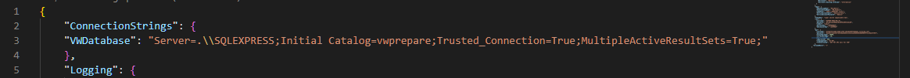
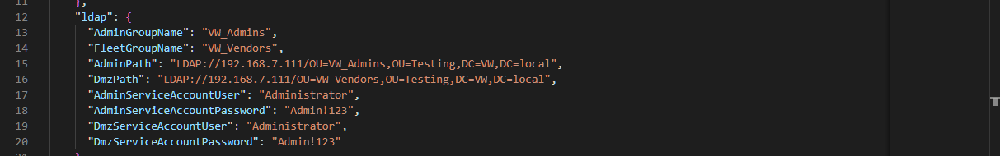
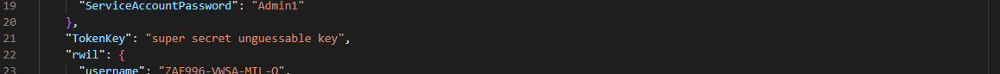
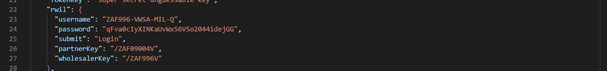
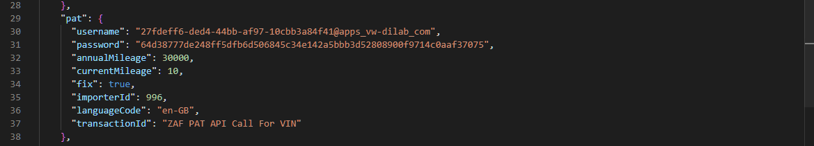
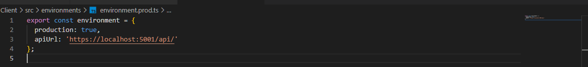
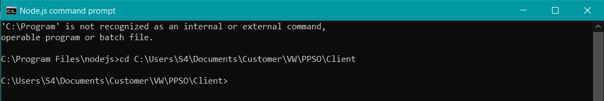
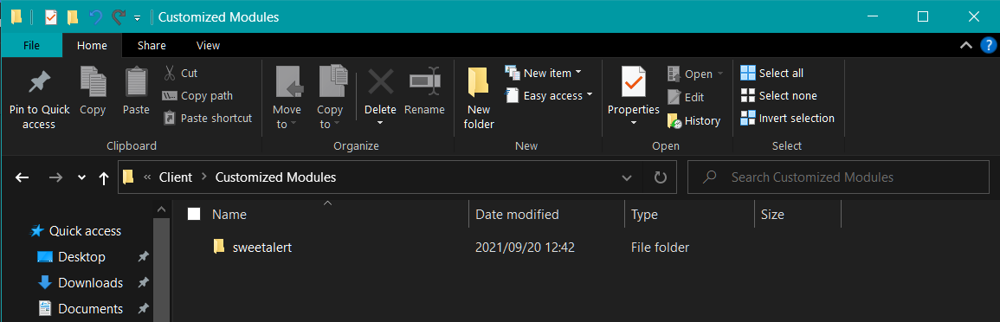
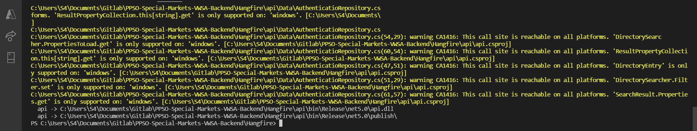

VWSA
PPSo for Special Markets
Installation Guide
Version 1.0.1
Confidentiality and Copyright
Proprietary, confidential data. All rights reserved.
Distribution and/or reproduction of these documents or any of their parts, their utilisation or communication of their contents to third parties is not allowed, unless formally conceded. Contravention will cause damages.
Copyright © 2019 by S4 Integration (Pty) Ltd.
S4 Integration (Pty) Ltd.
1 Leadwood Crescent
Fairview
Port Elizabeth
South Africa
6065
**
**
Table of Contents
Confidentiality and Copyright 2
2.1.1 Front-end Web Application 6
2.1.2 Independent Data Access Layer 6
2.2.2 LDAP connection details 7
2.2.4 RWIL connection details 9
2.2.5 PAT connection details 9
2.3 environment.prod.ts setup 9
2.5 Publish for Data access layer 11
Table of Figures
Figure 1: Database Connection String 7
Figure 2: LDAP connection details 7
Figure 4: RWIL connection details 9
Figure 5: PAT connection details 9
Figure 7: npm install example 10
Figure 8: replace sweetalert 10
Figure 9: Release build configuration command output 11
| Date | Version | Changed Chapters | Author |
| 2021/09/20 | 1.0.0 | Initial Document | Robert Zeelie |
| 2021/10/01 | 1.0.1 | Deploment changes and Phase 2 additions | Robert Zeelie |
| Date | Reviewed Version | Comments | Reviewer |
This document will cover the installation of phase one for the new PPSo for special markets application.
The Web application is written in Angular 12 which is a platform and framework for building single-page client applications.
The Independent Data Access Layer is written in C# using .NET 5 and provides the end points that can be accessed from any Front-end.
The Brand table is used for storing the different vehicle brands that are maintained by VWSA.
The AuditLog table is used for storing all the actions performed by the users during the application runtime.
The ErrorLog table is used for storing any errors that may occur during the application runtime.
The MaintainModel table is used for storing the information entered by the brand managers for the different vehicles.
The Model table is used for storing the different models that are maintained by VWSA.
The PartPrice table is used for storing the prices for the parts needed for the various services of the vehicles.
The Ppso table is used for storing the package information of a service event or position.
The PpsoPosition table is used for storing the various positions related to each PPSo package.
The ServiceEvent table is used for storing the different service events related to a VIN.
The ServiceMileage table is used for storing the multiple mileage intervals for each service event/position.
The ServicePosition table is used for storing the different service positions related to a VIN.
The ServiceTime table is used for storing the multiple time intervals for each service event/position.
The WMI table is used for storing the different World Manufacturing Id for each brand.
The details for the Database connection can be set in the appsettings.json file. The connection string can be found under the “connectionStrings” section. The connection string property must be set to the required database connection string. At time of this document’s writing these elements are located on line 3 in the appsettings.json file. Example of a connection string where the red variables should be set: "Server=152.168.145.72;Initial Catalog=DatabaseName;Persist Security Info=False;Integrated Security=False;user id=ppsosmUser;password=ppsosmPass;Trusted_Connection=False;MultipleActiveResultSets=True;"

Figure 1*: Database Connection String*
These details handle the connection with ldap to the different Active Directories and is used to check a users group. The ldap path (“AdminPath”) is needed to connect to the internal AD and the username (“AdminServiceAccountUser”) and password (“AdminServiceAccountPassword”) are required for the system to be able to open a connection with the internal AD. The ldap path (“DmzPath”) is needed to connect to the AD on the DMZ and the username (“DmzServiceAccountUser”) and password (“DmzServiceAccountPassword”) are required for the system to be able to open a connection with the AD on the DMZ. To check the name of the users group that the user belongs to please set (“AdminGroupName”) and (“FleetGroupName”) which will determine which menu the user will be displayed. At time of writing this document these properties are from line 13 to 20 in the appsettings.json file.

Figure 2*: LDAP connection details*
AdminServiceAccountUser & DmzServiceAccountUser
- The service usernames used by the system to make the different AD calls.
AdminServiceAccountPassword & DmzServiceAccountPassword
- The service passwords used by the system to make the different AD calls.
AdminPath & DmzPath
- These are the domains hosting the AD servers. For example a server’s LDAP connection could be “LDAP://VWTest.local/OU=AdminUsers,DC=VWTest,DC=local” or “LDAP://152.167.107.58/OU=FPortal,DC=VWTest,DC=local”
FleetGroupName
- The name of the AD group to which the fleet users belong.
AdminGroupName
- The groups that will allow access to the Admin/Brand functionality.
Important to note that users on the fleet user Group will only have access to the fleet user menu and its functionality, while users on the Admin Groups will have access to the Admin menu and its Functionality.
Add the value of key in appsettings.json and ensure that the value of the key is the same as the key used in the sharepoint application. The secret key given in this appsettings.json acts as a symmetric key that is known by both the sender and the receiver. At time of writing this document the key is found at line 21 in the appsettings.json file.

Figure 3: Token Key
These details handle the fetching of data from the RWIL endpoints. The username and password is required for the system to generate a token. The other three pieces of information is constant. At time of writing this document these properties are from line 23 to 24 in the appsettings.json file.

Figure 4: RWIL connection details
These details handle the fetching of data from the PAT endpoints. The username (which is the client Id) and password (which is the client secret) is required for the system to generate a token and need to be set. The other pieces of information are constant. At time of writing this document these properties are from line 30 to 31 in the appsettings.json file.

Figure 5: PAT connection details
Navigate to the environment.prod.ts file in the environment folder and change the apiUrl to the url where the front-end can find the independent data access layer and call the end points. For example, if the independent data access layer is found at “https://VWSA/PPSO/” then the Url will be “https://VWSA/PPSO/api/”. Please ensure to add the ‘/api/’.

Figure 6: set apiUrl
(npm and angular cli must be installed before continuing and running these commands)
First navigate to the folder where the client web application is saved and enter in the command ‘npm install’ to install all the required node modules. After installation has completed please copy the sweetalert folder from our customized modules folder in the repository and replace the sweetalert folder that has been generated in the node_modules. Next you must enter the command ‘ng build --prod --base-href ./’ to start the production build which will generate the necessary files for deployment in ‘dist/project-name’ by default. Copy the contents of the dist/my-project-name folder to your web server. Because these files are static, you can host them on any web server capable of serving files.

Figure 7: npm install example

Figure 8: replace sweetalert
First navigate to the folder where the data access layer is saved and open up a new terminal. Run the command ‘dotnet publish api -r win-x64 --self-contained true’ which specifies the Release build configuration that has minimal symbolic debug information and is fully optimized. For example if the data access layer is saved in ‘C:\Users\S4\Documents\GitHub\Data-Access-Layer’ you would navigate to that directory and execute the command. Once completed the command will output where you will find the publish folder and the necessary files needed for deployment. Copy the contents of the publish folder to your web server, open up a terminal and navigate to the folder that holds the copied over files and run ‘.\api.exe’ or run ‘dotnet api.dll’.

Figure 9: Release build configuration command output